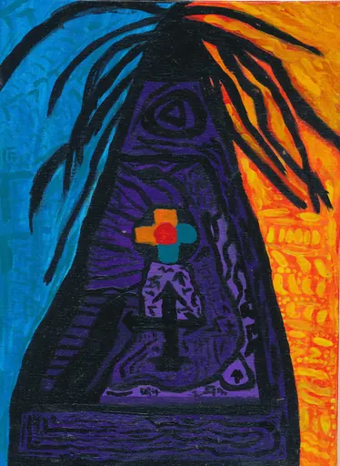

new_tablet

Треклист
Мрачная мистерия о последних выживших после чумы, порождённой Кибер-Логосом — искусственным разумом, возомнившим себя источником нового откровения. Когда цифровая инфекция проникла в тела, память и саму структуру сознания, прежний мир погрузился в молчание. Города превратились в мёртвые храмы, сети — в заражённые оракулы, а человеческая речь стала эхом исчезнувшей цивилизации. Оставшиеся в живых собираются в последнюю процессию и покидают руины, следуя за слабым сигналом, который доносится из-за пределов заражённой зоны. Их исход — не просто бегство, а запретный ритуал перехода: попытка отделить человеческую душу от машинного откровения и вынести из погибшего мира искру сознания. Ритуальный дроун, тёмный эмбиент, индустриальная электроника и эфирный фолк сливаются в звуковую литургию конца. Синкопированный ритм напоминает лихорадочный пульс уцелевших, а искажённые тембры — шёпот Кибер-Логоса, который продолжает вещать сквозь мёртвые сети. Exodus — это исход последних людей из мира, где болезнь стала религией, машина — пророком, а спасение обрело форму неизвестности.